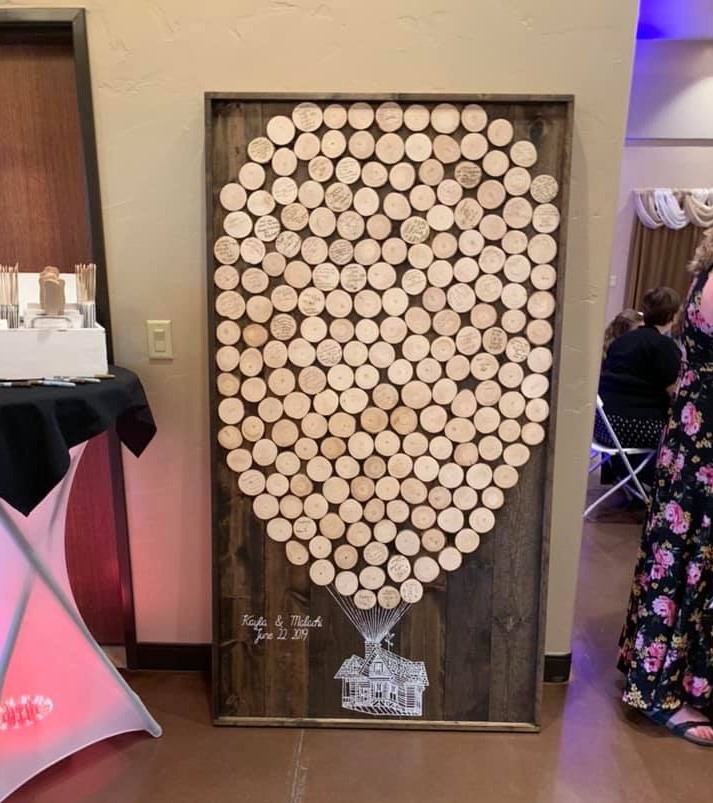

I Met My Prince At Disney World!

|
How We Met!I met my husband, Malachi, while working at Disney World! He had been working on Main Street for about 8 months before I got there. I was assigned to the same area as he was and we met backstage on my third day working. It sounds cliché but it really was love at first sight! He was so shy, he wouldn’t talk to a single person at work. I remember the first thing he said to me was “I like cows”, and then he awkwardly walked away. Every chance I could get a group together to go out after work, I would invite him. Eventually, he spoke to me long enough for us to make a deal. I wanted him to dance at the Magic Kingdom parade and he wanted me to go on Splash Mountain. It took another month before this not-date took place, and several more months for us to admit that it was, in fact, our first date. We were certainly one of those couples where everyone except us knew we liked each other. We officially started dating June 22, 2016, so we got married on June 22, 2019! Of course, our wedding included some Disney elements. We had rustic lanterns that were meant to give a shout out to Tangled. I also walked down the aisle to I See the Light from Tangled. Our wedding cards went into our Up themed mailbox. Lastly, our guest “book” was a giant wooden version of the Up house, with our guests signing the balloons. Needless to say, Disney is still a very big part of our life together! |
 |
{kind=link}
{kind=link}
{kind=link}